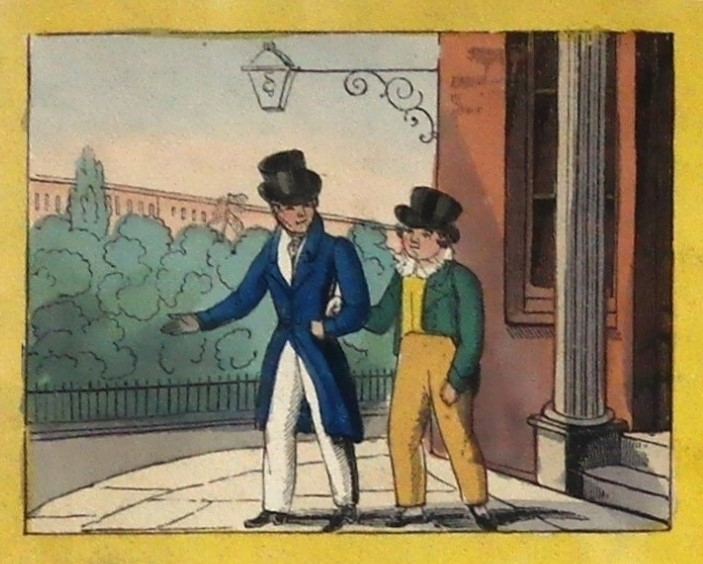

Welcome to

From the eighteenth century, British publishers produced games alongside stories, alphabets, blocks and toys in order to educate and entertain children. Mapmakers were early publishers of children’s games creating dissections (or puzzles) of maps and developing new board and card games. By the late eighteenth century, children’s book publishers, keen to delve into this new market, created their own toys and games and sold them in their shops. London was at the centre of this children’s publishing trade. Board games were used both as part of formal instruction and as informal instructive leisure pursuits and their use reflected new views about the importance of play as a way to teach children. The games produced in the Georgian and early Victorian eras were played by children on their own or with family groups and educators. The cost of these games meant that they were primarily purchased for and played by middle and upper-class children. These educational games reveal the subjects that were seen to be important for children to know with games featuring British history, classical myths and history, geography (of Britain and the world) and science (including new astronomical discoveries). Some of the earliest board games were tours of England, Scotland, Wales and Ireland. These games were designed to familiarise children with British heritage sites and entertainments including the sites of London.
Scenes in London was first made in the 1820s by children’s publisher Edward Wallis. It was a race game, offering children a chance to tour the city of London while they competed to see who would arrive first at the Bank of England.
Click on the game below to enlarge the image.

This version of the game was on cloth (linen) and could be folded up and placed in a container (known as a slipcase). The game was coloured (that is painted) by hand. The bottom of the game gives the location of Edward Wallis’s shop in London – 42 Skinner Street. The instructions were placed in the centre of the game though this became less common in the nineteenth century when many games had separate rulebooks. Today these games can be found in archives, museums and in the hands of private collectors. This image comes from the private collection of Dr Adrian Seville.
The game was designed to simulate a child’s visit to the capitol. Gameplay allowed children to replicate the experience of visiting so that children were asked to stop on specific spaces to mimic seeing a place, go backwards and forwards to see other sites and pay for experiences such as entry fees using their allotted 24 counters. Scenes in London features eighteen attractions that were deemed entertaining and educative for young audiences:
Some of these sites may be familiar to you today. Four spaces were dedicated to the Tower of London which was a major tourist attraction in the nineteenth century. The Horse Armoury at the Tower included a line of kings (carved from wood) in armour on horseback. Children could also visit animals such as lions and tigers at the Tower’s menagerie. Other sites no longer exist such as Carlton Palace which was demolished in 1826 and the Cosmorama rooms, an exhibition space, which opened in 1823. It is interesting to note that along with attractions and heritage sites that we might expect, children were also expected to know about sites like the Custom House, Bank of England and the Royal Exchange.
Where’s Wally? One of the interesting features of this game is that you follow two characters (possibly a father and his son) as they venture through London. Can you spot them in the scenes with people?
Dr Barbara Gribling (School of English Literature, Language and Linguistics, Newcastle University) led this pilot project in collaboration with Dr Kate Court, a Research Software Engineer at the Digital Institute (Newcastle). The project ran from 1 May to 1 August 2020. It was funded by a HaSS (Humanities and Social Sciences) initiative to bring digital solutions to current problems by recreating the experience of playing these games at home or at school. The board game Scenes in London was one of many artefacts unearthed as part of Dr Gribling’s work with Professor Matthew Grenby on their childhood and the history of heritage book project 1750-c.1950. Part of this work explores the many toys and games designed to engage children with British heritage-sites including ‘tour’ games. Dr Adrian Seville, an external project partner and a board games historian and collector, provided a photograph of this game from his private collection. This prototype forms part of a larger project ‘Heritage Explorers’ to digitally recreate popular British history and heritage-themed educational board games from the eighteenth and nineteenth centuries. The project lead and partners are exploring options for further funding to continue work on this game and to bring to life other games.
If you would like to contact us about the project or offer feedback on the prototype please email: Barbara.Gribling@newcastle.ac.uk